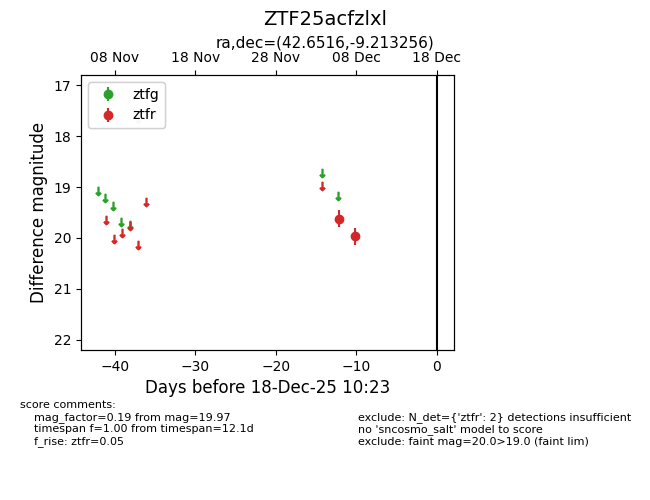
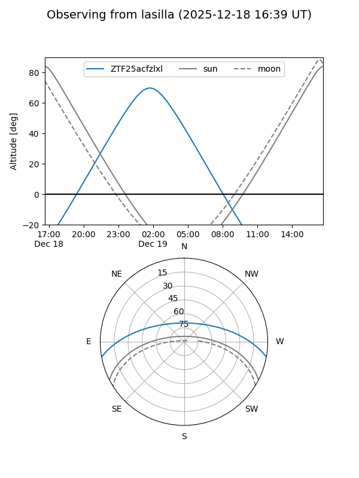
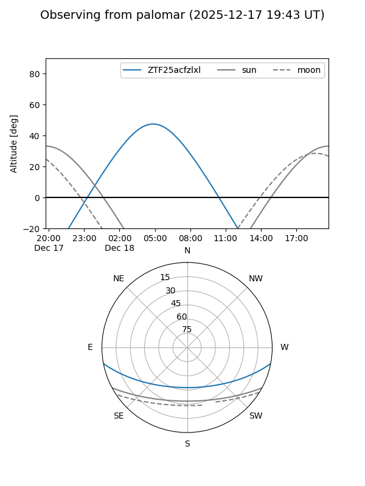

ZTF25acfzlxl
Target ZTF25acfzlxl at 2025-12-18 11:17
Aliases and brokers:
FINK: fink-portal.org/ZTF25acfzlxl
Lasair: lasair-ztf.lsst.ac.uk/objects/ZTF25acfzlxl
ALeRCE: alerce.online/object/ZTF25acfzlxl
alt names
ZTF25acfzlxl (ztf,fink_ztf)
Coordinates:
equatorial (ra, dec) = 42.6516,-9.21326
equatorial (HMS+DMS) = 02:50:36.38,-09:12:47.72
galactic (l, b) = (186.0969,-56.65806)
Photometry
last ztfr=19.97
2 ztfr detections
Lightcurve

Visibility


Additional plots